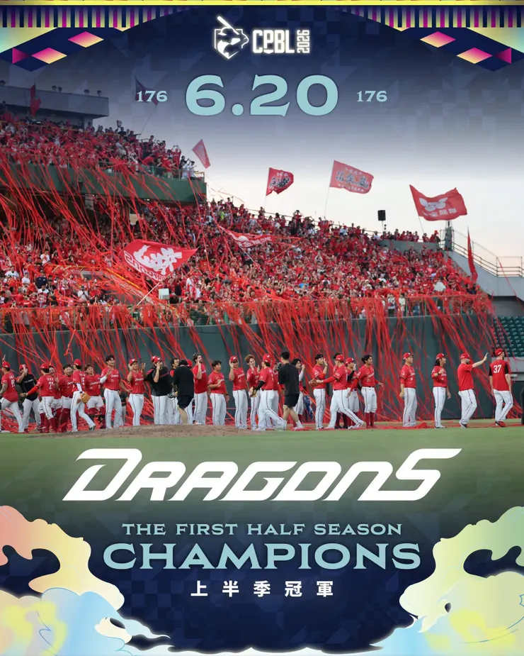

去年季前大家討論味全是ＦＡ朱育賢和陳子豪，戰績卻大失所望。今年大家看到的是上壘、盜壘、推進，加上適時長打；洋投先發穩定輸出、本土牛棚的穩定。真正的差別，或許不在場上，味全今年整體戰術執行力的成功率，細節都在那些觀眾看不見的地方。
今天澄清湖球場一片紅潮～2026味全龍上半季冠軍！紅彩帶太美了💖🐲❤️
2025年味全龍高薪簽下兩位球隊最缺的長打選手，球季末卻只拿到第五名。然而在大家還在嘲笑味全只會追逐球星沒有用時，味全再次補強了教練團、運動科學團隊和情蒐團隊，這次是完成奪冠球隊的關鍵拼圖。當球隊的凝聚力一旦成形，冠軍往往只是副產品。

情蒐與細膩度的提升 建立味全新球風
時間拉到2025年球季結束，大概沒多少人能預測到2026上半季的劇本。去年味全龍補進朱育賢、陳子豪兩大重砲，被視為奪冠熱門，結果最終只拿下第五名。
而今年開季前，甚至加上徐若熙踏上旅日之路，高薪加盟日職軟銀鷹。龍迷固然不捨，但更多的是祝福，所有人都期待龍之子站上更高的舞台。然而在這樣的背景下，味全龍卻一步一步登上龍頭，最終拿下上半季冠軍。
如果只看球員陣容，當然覺得意外。但如果仔細觀察龍隊休賽季的球團陣容，就會發現這一切其實有跡可循。從味全龍的教練團、情蒐、運科團隊，就可以看出球團的差別：
- 古久保健二－統籌一、二軍戰力銜接（每天都比昨天更進步一點，與選手並肩作戰）
- 彼得森－打造進攻體系（盜壘進化、打造棒球IQ）
- 納瓦洛－整合投手戰力（從失敗數據找解藥）
- 井尻哲－建立情蒐與資訊優勢（各種球場內外的細節）
- 運動科學團隊－降低傷病、提升表現
這些名字不像自由球員加盟那樣引發新聞熱度，卻是對職業球隊影響深遠的補強。
農場深度強度兼具 發揮球員特色
許多球隊最大的問題，不是一軍不夠強。而是一軍和二軍像是兩個世界，養成方向不同，訓練內容不同，升上一軍後還要重新適應。古久保健二帶來的改變，就是讓這條路變得更順暢，讓二軍養成與一軍需求接軌。
讓球員升上一軍時，照著當初訓練的方向，執行習慣的戰術，注意自己的弱點、發揮自己的強項，不用重新開始。這種改變球員數據看不見，卻會反映在整支球隊的深度上。
今年味全龍最大的特色，就是你很難只挑出一位英雄，劉俊緯受傷時張政宇補上、陳子豪低潮時有張祐銘、張祐嘉頂上，不只靠球星的發揮，而是球團養成系統開始成熟的證明。
改變壘間策略 把速度拚勁化為武器
另一個明顯的變化則來自球風，去年大家都在期待吉力吉撈、劉基鴻、朱育賢等砲手的全壘打，今年讓大家印象深刻的是，郭天信、張政宇、李凱威透過選球、觀察守備站位，提升了上壘率，加上高發動率和高成功率的盜壘，讓對手投捕沒有喘息的空間，蔣少宏、林辰勳在配球、阻殺的成長，並且能夠適時地推進、戰術執行，整支球隊沒有弱棒。
龍隊不再只是依賴長打火力，透過各種積極跑壘不斷製造壓力。這種轉變背後，除了教練團思維的改變，更是配合對於投手動作、出手秒數、阻殺秒數等情蒐的成果。找到最適合現有陣容的贏球方式，而不是執著於外界期待的樣子。
投手教練帶心調度 讓牛棚模擬各種狀況
投手群也是如此，徐若熙旅外後，龍隊的投手陣容依舊出色。王牌鋼龍、本土洋投伍鐸依舊穩定，轉隊的梅賽鍶、魔神龍表現出色，新簽下的蔣銲更是目前的防禦率王。郭郁政和曾仁和的先發都表現出色，牛棚除了勝利組的林子昱、陳冠偉、林凱威之外，李超、林鋅杰，甚至自培的王凱程都穩定吃下了局數。
這要歸功納瓦洛深入了解每個投手的性格，透過討論在賽前就擬定各種情況與投手討論策略；加上味全龍近年投入的投手養成與運動科學資源，包含注重轉速、轉軸等進階數據都已經開始產生效果。當一支球隊的投手陣容能持續產出戰力，才會感受到球隊真正變強
強隊的化學反應 往往反映在球隊韌性
身為老龍迷看到這支味全龍，總會想起徐生明時代的那句棒球哲學：「棒球是團隊運動。」明星很重要，但真正成熟的爭冠球隊，是落後時也隨時能逆轉的能力。去年味全得分能力不佳，一旦落後，就覺得很難追得回來。今年完全不一樣，無論落後多少分，好像都追得回來。彷彿回到三連霸的時候，無論短打、盜壘、全壘打，關鍵時刻總能期待適時一擊。
2026年味全龍上半季封王，不只完成一次成功的補強，更代表這支離開CPBL多年的球隊，正在從「擁有好球員」，進一步進化成「擁有好系統」。而對任何一支職業球隊來說，是告訴大家：味全龍奪冠不是運氣，是正式回歸奪冠勁旅。恭喜味全龍，率先取得總冠軍賽門票一張，今年開始，讓味全龍再次迎接連霸的王朝歸來！